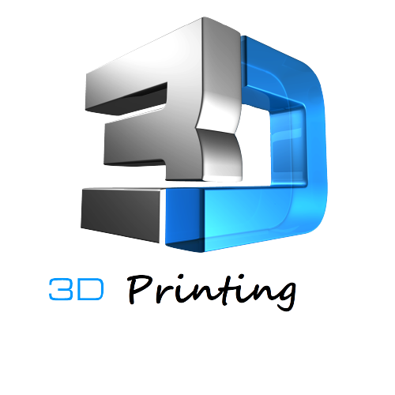

L’impression 3D appelée aussi fabrication additive, n’est pas une technologie qui
fonctionne d’une seule et
unique manière.
Il existe en réalité une multitude de procédés permettant d’imprimer un objet en 3D.
Si les
techniques employées diffèrent sur la forme, le principe reste toujours le même.
Il consiste à
superposer
des couches de matières avec une imprimante 3D selon les cordonnées XYZ (largeur, profondeur, hauteur)
transmises par un fichier 3D.
Le guide suivant révèle le fonctionnement de cette technologie étape par
étape, ainsi que les matériaux employés selon le procédé d’impression 3D.
Fonctionnement d’une imprimante 3D
L’impression 3D fonctionne selon plusieurs procédés, qui diffèrent selon le type d’imprimante 3D utilisée.
On peut classer ces procédés dans trois grands groupes :
Le dépôt de matière
La solidification par la lumière
L’agglomération par collage
Ces trois procédés fonctionnent selon le même principe de base, c’est à dire superposer des couches de
matières selon les coordonnées XYZ d’un fichier 3D. La différence se situe sur la manière dont sont déposées
et traitées ses couches, ainsi que le type de matériau utilisé.
Pour la plupart des procédés employés l’utilisateur a besoin :
d’une imprimante 3D
de consommable (filament, poudre…)
d’un fichier 3D (le plus souvent au format STL ou OBJ)
d’un logiciel de slicing pour trancher le fichier et transmettre les indications à l’imprimante
d’un ordinateur
La manière d’exporter les fichiers vers l’imprimante diffère selon les marques et les modèles : câble USB,
Wi-Fi ou carte SD.
1. L’impression 3D par dépôt de matière
Le FDM ou FFF
explication les différente étape du FDM
La majorité des imprimantes 3D personnelles fonctionnent selon ce principe. FDM est l’acronyme anglais de
Fused Deposition Modeling qui signifie « modelage par dépôt de filament en fusion ». Ce procédé qui a été
inventé en 1988 par la société Stratasys, est une marque déposée. On parle aussi de FFF (Fused Filament
Fabrication) voir même de MPD (Molten Polymer Deposition) qui sont eux des termes libres de droits. Cette
technique consiste à déposer couche par couche un filament de matière thermoplastique fondu à 200°C (en
moyenne) qui en se superposant donne forme à l’objet.
La tête d’impression se déplace selon les coordonnées X, Y et Z (longueur, largeur et hauteur) transmises
par un fichier 3D correspondant au modèle 3D de l’objet à imprimer. Limitée pendant longtemps à des
matériaux de type plastique tels que les classiques PLA et l’ABS, l’impression 3D voit arriver de nouveaux
filaments composites à base de métal (cuivre, bronze…), de fibres de carbone et même de bois. Plus rarement
certaines machines utilisent des cires ou des polycarbonates. Aujourd’hui l’industrie agroalimentaire et la
médecine s’emparent peu à peu de cette technique pour imprimer des aliments et des cellules en adaptant la
tête d’extrusion.
– Ci-dessous une vidéo tutorielle qui vous aidera à mieux comprendre le fonctionnement d’une imprimante 3D
FDM et les différentes étapes d’une impression.
2 . La solidification par lumière
La stéréolitographie ou SLA
La stéréolitographie est la première technique d’impression 3D à avoir été mise en évidence. Si la paternité
de ce procédé est souvent attribuée à l’américain Charles Hull fondateur de 3D Systems, on doit en fait
cette invention à trois français (Alain le Méhauté, Olivier de Witte et Jean Claude André) dont leurs
brevets bien que déposés 3 semaines plus tôt (16 juillet 1984), n’ont malheureusement pas été renouvelés.
Appelée aussi SLA (Stéréolithographie Apparatus) cette technique consiste à solidifier un liquide
photosensible par le biais d’un rayon laser ultraviolet. Les imprimantes fonctionnant par SLA ont quatre
parties principales: un réservoir qui peut être rempli avec un liquide photopolymère, une plate-forme
perforée qui est descendue dans le réservoir, un rayonnement ultraviolet (UV ) et d’un ordinateur commandant
la plate-forme et le laser.
Tout comme la FDM, l’imprimante va dans un premier analyser le fichier CAO, puis en fonction de la forme de
l’objet va lui ajouter des fixations temporaires pour maintenir certaines parties qui pourraient
s’affaisser. Puis le laser va commencer par toucher et durcir instantanément la première couche de l’objet à
imprimer. Une fois que la couche initiale de l’objet a durci, la plate-forme est abaissée, est ensuite
exposée une nouvelle couche de surface de polymère liquide. Le laser trace à nouveau une section
transversale de l’objet qui colle instantanément à la pièce durcie du dessous.
Ce processus se répète encore et encore jusqu’à ce que la totalité de l’objet ce soit formé et soit
entièrement immergé dans le réservoir. La plateforme va ensuite se relever pour faire apparaitre l’objet
fini en trois dimensions. Après qu’il ai été rincé avec un solvant liquide pour le débarrasser de l’excès de
résine, l’objet est cuit dans un four à ultraviolet pour durcir la matière plastique supplémentaire.
Les objets fabriqués selon la stéréolithographie ont généralement une bonne qualité de finition et de détail
(0,0005 mm) on obtient des surfaces bien lisses et régulières. Qualitativement elle fait partie des
meilleurs techniques d’impression 3D actuellement. La durée nécessaire pour créer un objet avec cette
technique dépend également de la taille de la machine utilisée. La SLA a aussi l’avantage de pouvoir
produire de grosses pièces (de plusieurs mètres). Pour ces objets là il faudra plusieurs jours, quelques
heures pour les plus petites.
Parmi ces inconvénients, un coût plus élevé que la FDM et un panel de matériaux et des coloris plus limité
du fait des polymères utilisés comme matière première. Les solvants et les liquides polymères dégageant par
ailleurs des vapeurs toxiques durant l’impression, votre local devra être équipé d’une hotte aspirante pour
l’aération.
Le procédé Polyjet
Cette Technologie brevetée par la société israélo-américaine Objet Geometries Ltd (rachetée en 2012 par
l’américain Stratasys), fonctionne aussi sur le principe de photopolymérisation. De la même manière, l’objet
sera modélisé en 3D avec un logiciel spécialisé (AutoCAD par exemple) puis son fichier envoyé à l’imprimante
3D. Les têtes d’impressions vont alors déposer en goutte à goutte de la matière photosensible sur un support
de gel, selon les coordonnées transmises par le fichier.
Une fois la matière déposée, celle-ci va être exposée à un rayon ultraviolet qui va alors la durcir
instantanément. L’opération sera répétée jusqu’à obtention de l’objet final, il ne restera alors plus qu’à
le nettoyer. Avec une précision de l’ordre de 0,005mm il est possible de réaliser des objets avec un haut
niveau de détail et des pièces d’assemblage pouvant s’imbriquer comme des engrenages.
Objet Geometries a par la suite affiné cette technique en mettant au point Polyjet Matrix. Avec 96 embouts
pour chacune de ses têtes d’impression, il est possible pour l’utilisateur de combiner plusieurs matériaux
différents, souples ou plus rigides. En permettant de créer son propre composite, ce procédé offre la
possibilité d’imprimer des d’objets plus variés et plus complexes.
Le frittage laser
procédé SLS
Cette technique créée par un étudiant américain dans une université du Texas en 1980, a été développée plus
tard (2003) par la société allemande EOS. Appelée aussi SLS (Selective Laser Sintering), il s’agit également
d’un processus d’impression par laser. Cette fois ci un faisceau laser très puissant va fusionner une poudre
à des points très précis définis par un fichier STL que communique votre ordinateur à votre imprimante 3D.
Les particules de poudre sous l’effet de la chaleur vont alors fondre et finir par se fusionner entre-
elles. Une nouvelle couche de poudre fine est ensuite étalée et à nouveau durcie par le laser puis reliée à
la première. Cette opération est répétée plusieurs fois jusqu’à ce que votre pièce soit finie. Ensuite,
votre partie est soulevée de la poudre libre et l’objet est brossé puis sablé ou poncé à la main pour les
finitions.
La poudre que l’on utilise le plus souvent pour ce type d’impression est de la polyamide. De couleur blanche
ce matériau est en fait un nylon. Il va donner à votre objet une surface poreuse qui pourra d’ailleurs être
repeint si vous souhaitez lui donner de la couleur. D’autres composants comme de la poudre de verre ou de la
céramique peuvent être aussi utilisés. Souvent les fabricants utilisent un mélange de deux sortes de poudres
pour obtenir des objets plus aboutis.
SLM
Sur le même principe on retrouve aussi le DMLS qui est l’abrégé de Direct Metal Laser Sintering. Ce procédé
permet de réaliser des objets en métal en fusionnant cette fois une poudre de fines particules métalliques.
Presque tous les métaux peuvent être utilisés, cela va du cobalt au titane en passant par l’acier et des
alliages comme l’Inconel.
Même si sa précision d’impression est inférieure au SLA, le frittage laser permet de fabriquer des pièces
avec un niveau de détail assez élevé (0.1mm) et à géométrie complexe. De plus la poudre restante qui n’aura
pas été passée au laser pourra être réutilisée la fois suivante. Généralement les pièces obtenues avec ce
processus demande davantage de finitions (ponçage, peinture, vernis…) que le SLA du fait de son rendu un peu
granuleux.
3 . L’agglomération de poudre par collage
LA 3DP (Three-Dimensional Printing)
Initialement développée en 1993 au Massachusetts à l’Institut of Technology (MIT) en 1993, la 3DP
(Three-Dimensional Printing) constitue la base du processus d’impression 3D de Z Corporation. Le procédé
consiste en l’étalement d’une fine couche de poudre de composite sur une plateforme. La tête d’impression va
alors déposer sur celle-ci de fines gouttes de glu colorées qui combinées entre elles permettent d’obtenir
un large panel de couleur. La plateforme s’abaisse au fur et à mesure que les couches de poudre sont collées
jusqu’à obtenir l’objet final.
Pour la finition il faut aspirer l’excédent de poudre, brosser et/ou poncer la pièce, puis la chauffer pour
finaliser la solidification. La 3DP a l’avantage d’être rapide et de proposer une large gamme de couleurs.
Jusqu’à 6 fois moins chère qu’une imprimante 3D SLA son prix est plus attractif malgré une précision et une
qualité d’impression parfois inférieure. Parmi les inconvénients, sans traitement post-impression les pièces
sont plus fragiles et leur surface est plus rugueuse.
.jpg)
.jpg)
.jpg)
.jpg)
.jpg)
.jpg)
.jpg)